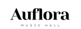
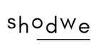

What We Do
Band Starter is a marketing agency built for musicians. From branding to social growth, we help artists break through the noise.
We’ve worked with upcoming acts like The Static District, Moon Motel, and Razorview—delivering custom campaigns that get results.
- Branding & Identity: Logos, album covers, and a visual language that defines your sound.
- Social Media Management: Custom content, strategy, and account growth on TikTok, Instagram, and more.
- Content Creation: Videos, promos, reels, and media kits designed in-house.
- Web & EPK Design: Mobile-ready websites and press kits built to impress promoters and labels.
- Digital Ads: Campaigns that drive views, follows, and ticket sales using YouTube, IG, and Spotify.
- Release & Tour Promotion: Complete support for launches, shows, and tour stops.
What Artists Are Saying
"Band Starter helped us shape our look, voice, and fan strategy. It completely changed how we’re seen online."
"We finally had a team that understood how bands work. From content to ads, they handled everything."
Artists & Brands We've Worked With

